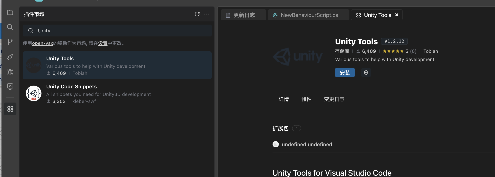
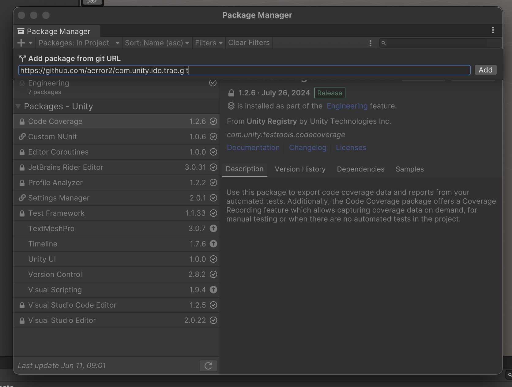
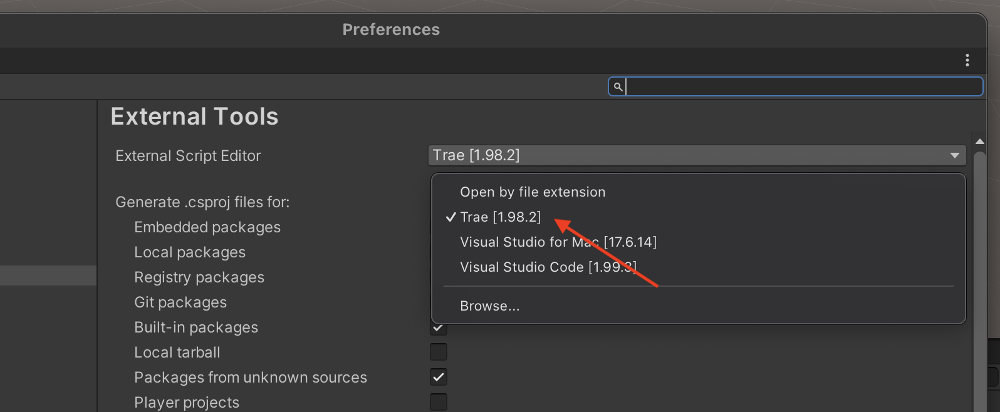

前言
最近看到很多人开始使用Trae，因此决定在 Unity 3D上实验一下，结果发现无法像在 VSCode 中那样正确打开项目. 但网上没有找到解决方案（这个刚写完，又找了一下，结果发现是有人写过解决方案了，有点尴尬， 哈哈，重复劳动了，不过做了也是做了，也是一样解决问题， 特此修改说明）， 只能自己动手，丰衣足食！自己写了一个可以高度集成Trae Editor这个IDE的 Unity3D Package。 在这里分享给大家。
Unity3d Package 工程的源代码在 https://github.com/aerror2/com.unity.ide.trae ， 请支持一下，帮忙点个star!
1.前置条件
1.1 安装 Trea
1.2 安装 Git
1.3 科学上网
2. 在 Trea 中安装 Unity 插件。

3. 打开项目的包管理器。

输入以下链接
https://github.com/aerror2/com.unity.ide.trae.git
点击添加。
如果报错，请检查是否开启了科学上网和安装了 Git，如果是后者，
Git 安装完成后记得重启 Unity 和 Unity Hub。
4. 设置外部编辑器。

选择 Trae 并单击 Regenerate project files。
然后就可以双击任意脚本来打开 Trae 了！